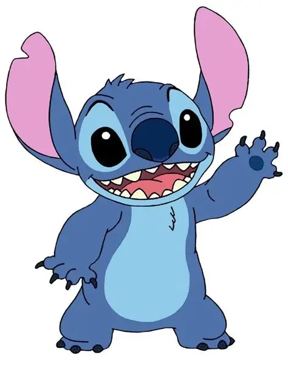

Welcome to My Page

This is me - Olivia (HenryStitch-Debug)
Passionate developer since 2003
Interested in web development - got some work experience here!
Love learning new technologies and expanding my knowledge
Always open to collaboration and new projects
My cat henry looks like stitch from 'lilo and stitch', hence the name
“First, solve the problem. Then, write the code.”
- John Johnson